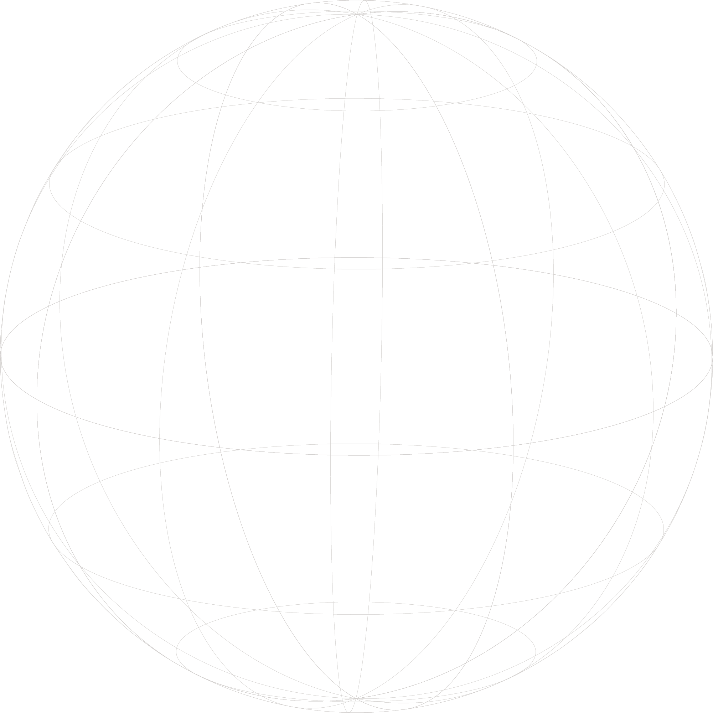

-
22.09 - 25.01
ISGOODSOFT
홈페이지 리뉴얼 및 유지보수
홈페이지 리뉴얼 : 기존 웹사이트의 디자인과 기능을 분석하여 사용자 경험을 향상시키기 위한 리뉴얼 작업을 수행했습니다.
지속적인 유지보수 : 웹사이트의 안정성과 성능을 유지하기 위해 사용자 피드백을 반영하여 정기적인 업데이트와 버그 수정을 진행했습니다.
UIUX 개선 작업
UI 요소 최적화 : 버튼, 메뉴, 폼 필드 등 주요 인터페이스 요소를 재설계하여 사용자의 클릭률 및 전환율을 높였습니다.
UX 테스트 : A/B 테스트와 사용자 피드백을 통해 개선점을 도출하고, 이를 바탕으로 사용자 흐름을 최적화하여 사이트 내비게이션을 개선했습니다.
반응형 웹 디자인 기획 및 구현
디자인 기획 : 다양한 화면 크기에 최적화된 레이아웃을 설계하여 모바일, 태블릿, 데스크톱 사용자에게 일관된 경험을 제공하였습니다.
프론트엔드 퍼블리싱 : HTML5, CSS3, JavaScript를 사용하여 다양한 기기에서의 접근성을 높였으며, 웹 표준과 접근성 기준을 준수하여 코드 품질을 강화했습니다.
-
20.03 - 22.06
PandaGram
상세 페이지 제작 및 유지보수
상세 페이지 설계 : 제품 및 서비스에 대한 정보를 효과적으로 전달하고, 사용자 친화적인 레이아웃과 시각적 요소를 활용하여 사용자 경험을 극대화했습니다.
콘텐츠 최적화 : SEO를 고려하여 키워드 분석을 통해 콘텐츠를 작성하고, 메타 태그 및 이미지 최적화를 통해 검색 엔진에서의 가시성을 높였습니다.
기능 구현 : 상세 페이지에 필요한 다양한 기능을 HTML, CSS, JavaScript를 활용하여 구현했습니다. 인터랙티브 요소를 추가하여 참여도를 높였습니다.
지속적인 유지보수 : 페이지의 성능을 모니터링하고, 사용자 피드백을 반영하여 콘텐츠를 주기적으로 업데이트했습니다. 또한, 발생하는 버그나 오류를 신속하게 수정하여 안정성을 유지했습니다.
publisher
PORTFOLIO



Career
Project
# HTML # CSS # JS
CODE REVIEW
designDigit
React, gsap과 ScrollTrigger 플러그인을
사용해 반응형 인터렉션을 구현한 클론코딩 웹사이트입니다.
# HTML # CSS # JS
CODE REVIEW
starbucks
loadash와, module package를 활용하여 클론코딩하였으며,
open Graph와 SEO를 중점으로 두고 작성했습니다.
# HTML # CSS # JS
CODE REVIEW
dp project
React를 활용하여 유지보수 효율성을 높이고 GSAP, SwiperJS를 활용하여 부드러운 애니메이션과
반응형에 더 집중하여 클론코딩한 사이트입니다.
# HTML # CSS # JS
CODE REVIEW
O'kitchen
gsap과 ScrollTrigger 플러그인을
사용해 인터렉션을 구현한 클론코딩 웹사이트입니다. PWA를 활용하여 app 다운로드가 가능하도록 했습니다.

Skill
CSS

IR 기법을 활용한 스타일 작성
Animation을 이용한 역동적인 효과 구현
다양한 기기를 고려한 반응형 디자인 구현
반응형 웹 페이지 스타일링
Open source
-
Table
Tailwind CSS & React Hook
Tailwind CSS 기법으로 커스터마이징된 스타일을 적용하고, React의 컴포넌트 기반 구조를 활용해 검색 기능과 동적 뉴스 항목 렌더링을 구현하여 직관적인 UI와 높은 기능적 편의성을 제공했습니다. -
Fetch API
Fetch API & map()
React에서 Fetch API를 활용하여 외부 JSON 데이터를 로드함으로서, 필요한 리스트 항목만을 선별적으로 렌더링 합니다. 이를 통해 사용자 집중도를 향상시키며, 확장성과 유지보수를 용이하게 할 수 있습니다. -
Data Binding
React Hook
useState()를 활용하여 데이터 로딩 속도와 화면 업데이트로 정보 접근에 용이하도록 합니다. 요소가 많을 경우 불필요한 리렌더링을 줄이게 되어 메모리 사용량 절감에 도움이 됩니다. -
Fetch API GNB
JSON & map()
외부 JSON 데이터를 로딩하는 기법으로 Fetch API를 활용하여 데이터 변경 시 자동으로 리렌더링되어 유지보수에 편하고 대규모 메뉴 확장성에 용이합니다. -
Axios GNB
axios.get() & GSAP
axios로 data에 직접 접근, 처리함으로서 데이터 요청과 유지보수를 더 용이하게 합니다. 또한 GSAP로 시각적 피드백을 더 효과적으로 부여했습니다. -
Multi Slider
swiper.js
React로 swiper를 적용하고 특정 해상도에 따라 분기하여 시각적 편의성을 제공합니다. 동시에 불필요한 기능이 로딩되는 것을 방지하고, 확장성에 유리합니다. -
Hook - 더보기
React Hook
React와 Hook 함수를 활용하여 데이터를 최적화하고, 사용자는 정보를 필요에 따라 추가적으로 확인할 수 있습니다. 이는 초기 데이터 로드 시간을 줄이며, 사용자에게 직관적인 인터페이스를 제공합니다. -
Hook - 정렬
Hook & sort()
sort method로 배열을 정리하여 사용자가 원하는 기준(제목, 날짜)에 따라 데이터를 정렬하도록 해, 정보 접근성과 편의성을 증가시킵니다.
Contact
△